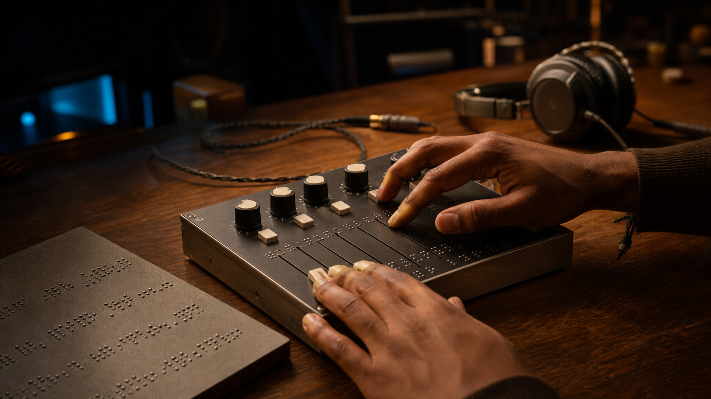

Blind Envy
Audio tools that feel as good as they sound.
Listen, touch, and tell your story.
Blind Envy takes the lost wisdom of tape-era audio work and gives it digital convenience: dedicated controls, motorized feedback, and fewer menus. We are building tactile recording and editing devices for those that need an alternative to screens. That includes people with screen fatigue, musicians who want a more physical instrument, and communities whose stories live more naturally in speech than in written interfaces.